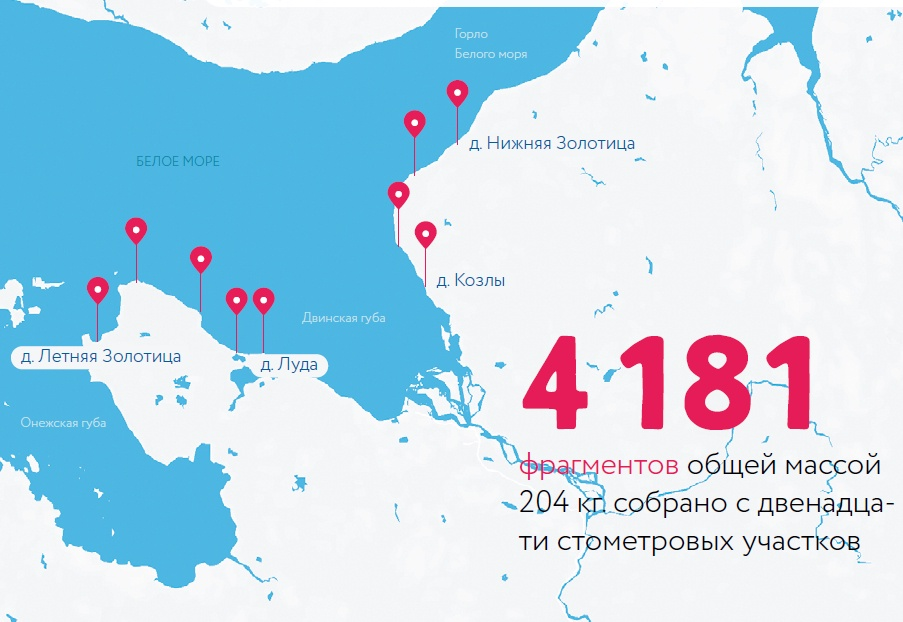
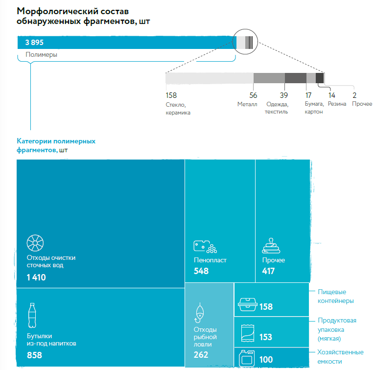
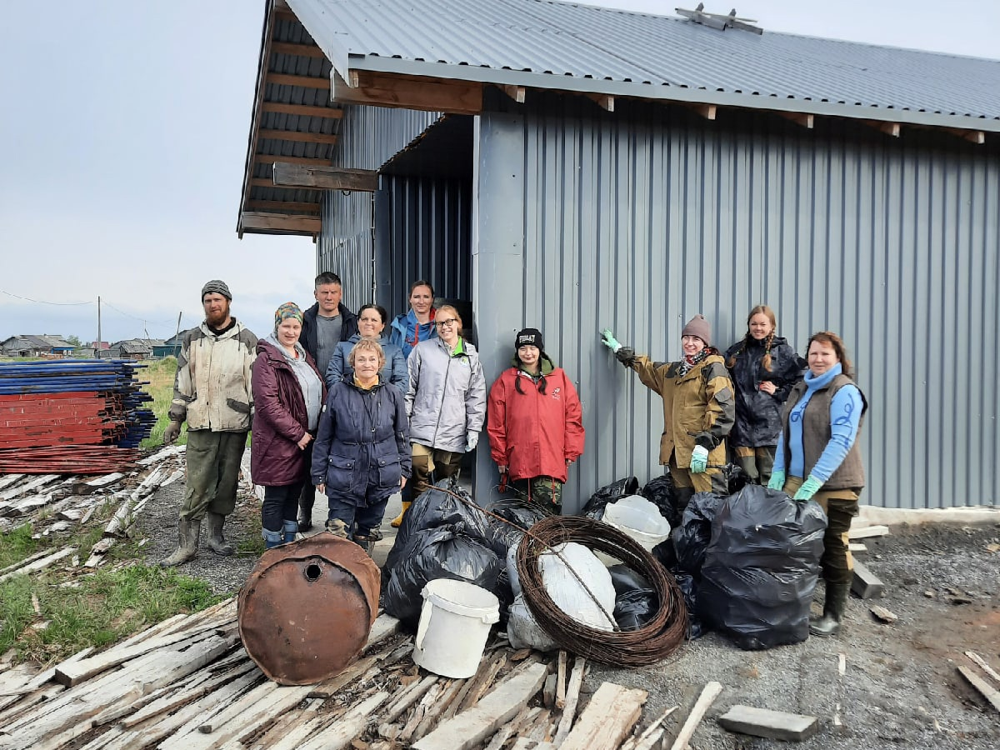

Исследование мусора в Онежском Поморье
Мусорный дрейф: от Северной Двины до побережья Онежского Поморья
Национальный парк «Онежское Поморье» — уникальная охраняемая территория с богатым морским наследием. Однако в последние годы берега сталкиваются с растущей проблемой пластикового загрязнения, приносимого течениями из рек и населённых пунктов.
Каждый час в Белое море попадает 3 000 частиц пластика (источник: plus-one.ru)
Узнать, как это связано со мной
Глобальное пластиковое загрязнение
Мировой океан сталкивается с беспрецедентным загрязнением пластиком. В Тихом океане сформировалось огромное мусорное пятно — скопление отходов, которое по площади превышает многие страны мира. Течения разносят пластик по всем океанам, включая арктические воды.
Научный факт
23 кусочка пластика достаточно, чтобы с вероятностью 90% убить морскую птицу. Исследование опубликовано в научном журнале.
Масштаб проблемы мусора в Белом море
Белое море — уникальный северный водоём, который ежегодно принимает тысячи тонн мусора из рек, прибрежных городов и рыболовных промыслов. Проблема особенно остра в период весеннего паводка и штормов, когда на берег выносит накопившийся за год мусор.
Состав найденного мусора
Данные основаны на полевых исследованиях побережья Онежского Поморья.

Карта территории
Нажмите на точки, чтобы увидеть подробную информацию о местах и найденном мусоре.
Галерея необычных находок
Волонтёры и исследователи находили на берегах Онежского Поморья самые разные предметы — от бытового мусора до неожиданных артефактов. Вот некоторые из наиболее интересных находок.
Игра: Очисти побережье
Перетащи предмет в правильный контейнер, чтобы очистить берег и узнать факт о находке.
Очки: 0 | Ошибки: 0
Что делать уже сегодня
Каждый из нас может помочь сохранить чистоту побережья. Вот простые правила, которые легко ввести в привычку.
Отдыхая на берегу
Не забудь забрать свой мусор с собой. Даже маленький пакет может провести в природе сотни лет.
Увидел мусор — убери
Замеченный на побережье забытый мусор забери с собой. Один человек может сделать многое.
Отправь мусор на переработку
Сортируй отходы и сдавай вторсырьё. Пластик, стекло и металл могут получить вторую жизнь.
Выбирай многоразовое
Отдавай предпочтение многоразовым вещам вместо одноразовых. Это ключевой принцип Zero Waste.
